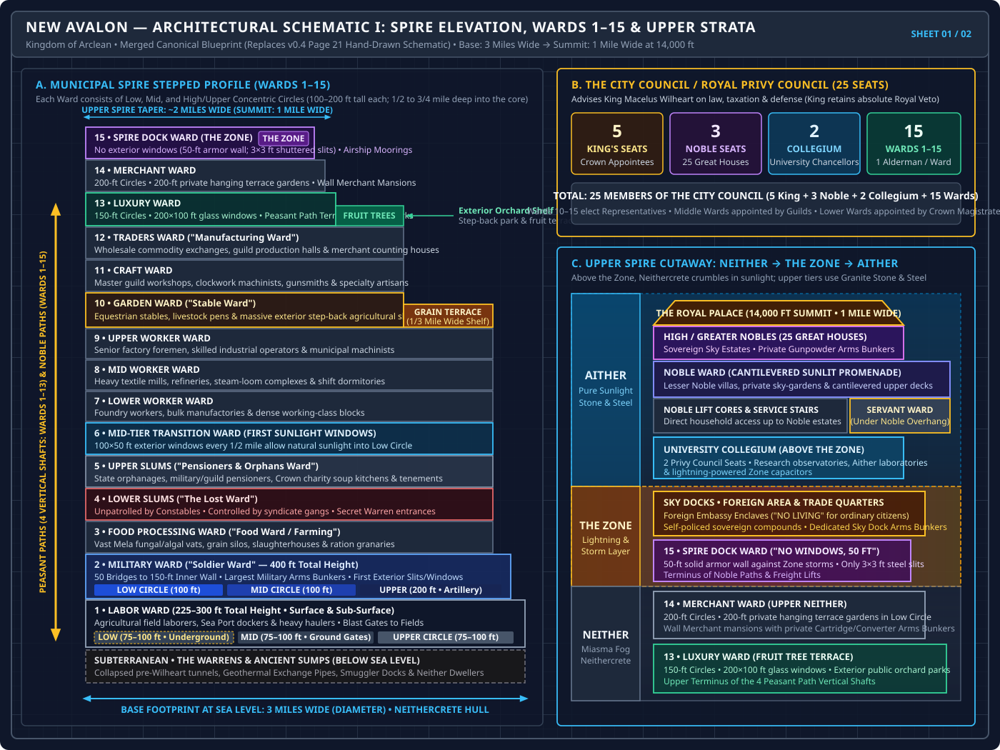
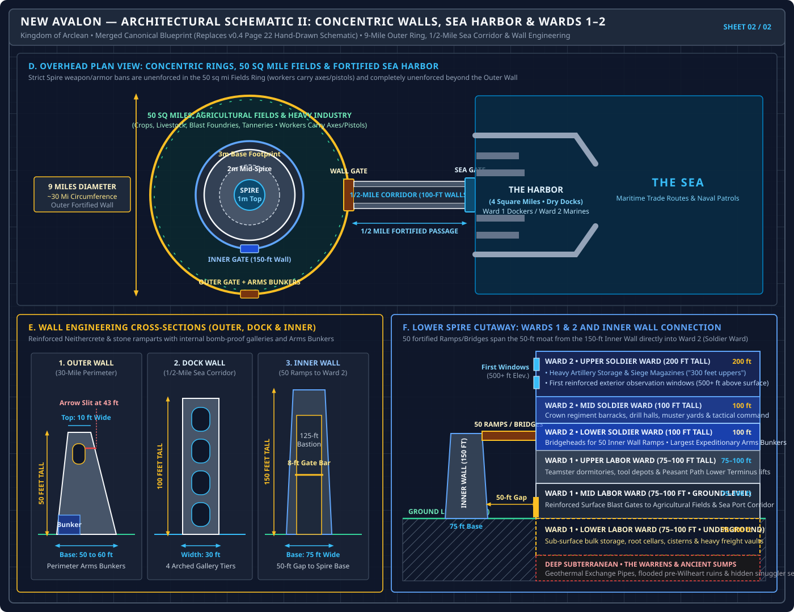

Sheet 01 — Stepped Spire Elevation (Wards 1–15), 25-Seat City Council & Upper Atmospheric Cutaway

Sheet 02 — Overhead Concentric Defense Map, Sea Harbor Corridor, Wall Cross-Sections & Wards 1–2 Cutaway

spire.pdf)
3-Mile Base Footprint • 14,000-ft Summit (1 Mile Wide) • 15 Municipal Wards • 30-Mile Outer Wall • 50 Sq Mi Agricultural & Industrial Ring • 4 Sq Mi Sea Harbor

